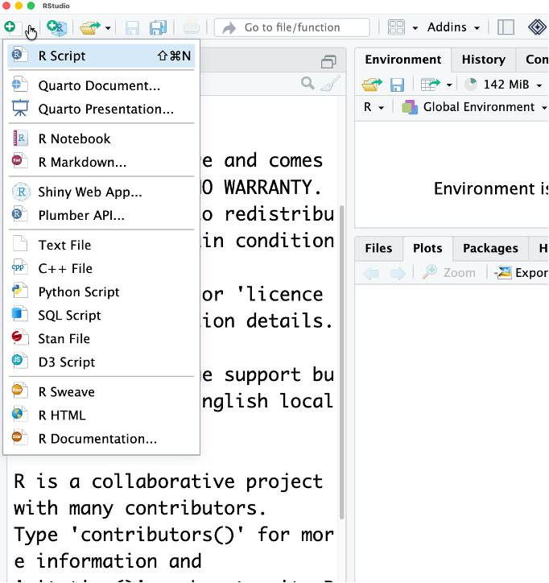
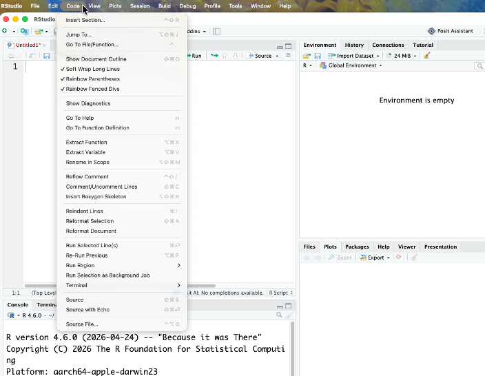
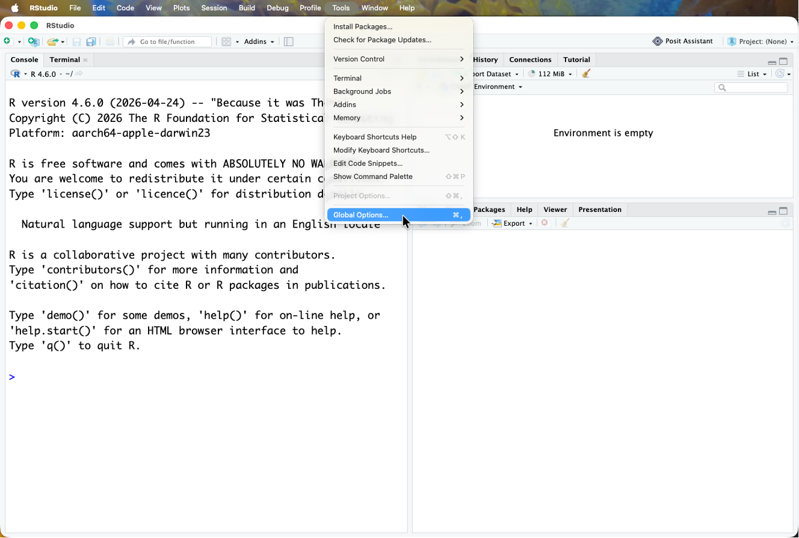
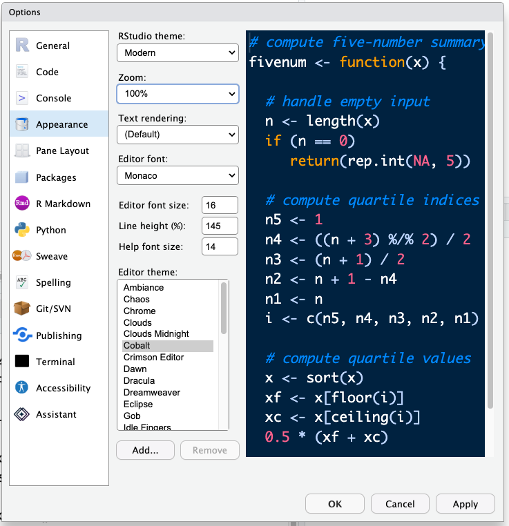
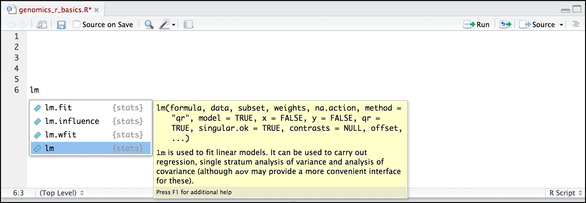
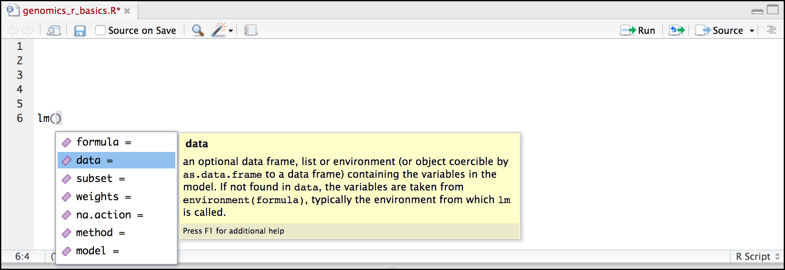

Introducing RStudio Server
In these lessons, we will be making use of a software called RStudio, an Integrated Development Environment (IDE). RStudio, like most IDEs, provides a graphical interface to R, making it more user-friendly, and providing dozens of useful features. We will introduce additional benefits of using RStudio as you cover the lessons. In this case, we are specifically using RStudio Server, a version of RStudio that can be accessed in your web browser. RStudio Server has the same features of the Desktop version of RStudio you could download as standalone software.

Overview and customisation of the RStudio layout
The first thing you’ll want to do is open a new R script to write all your code in. Click the new script button in the top left corner:

Here are the major windows (or panes) of the RStudio environment:

Source: This pane is where you will write/view R scripts. Some outputs (such as if you view a dataset using
View()) will appear as a tab here.Console/Terminal/Jobs: This is actually where you see the execution of commands. This is the same display you would see if you were using R at the command line without RStudio. You can work interactively (i.e., enter R commands here), but for the most part we will run a script (or lines in a script) in the source pane and watch their execution and output here. The “Terminal” tab give you access to the BASH terminal (the Linux operating system, unrelated to R). RStudio also allows you to run jobs (analyses) in the background. This is useful if some analysis will take a while to run. You can see the status of those jobs in the background.
Environment/History: Here, RStudio will show you what datasets and objects (variables) you have created and which are defined in memory. You can also see some properties of objects/datasets such as their type and dimensions. The “History” tab contains a history of the R commands you’ve executed R.
Files/Plots/Packages/Help/Viewer: This multi-purpose pane will show you the contents of directories on your computer. You can also use the “Files” tab to navigate and set the working directory. The “Plots” tab will show the output of any plots generated. In “Packages” you will see what packages are actively loaded, or you can attach installed packages. “Help” will display help files for R functions and packages. “Viewer” will allow you to view local web content (e.g., HTML outputs). In the “Files” tab you can select a file and download it from your cloud instance (click the “more” button) to your local computer. Uploads are also possible.
All of the panes in RStudio have configuration options. For example, you can minimise/maximise a pane, or by moving your mouse in the space between panes you can resize as needed. The most important customisation options for pane layout are in the View menu. Other options such as font sizes, colors/themes, and more are in the Tools menu under Global Options.
Code and Global options
These are a few suggestion we have for improving your viewing and coding experience
- Under Code enable ‘Rainbow Parentheses’ and ‘Soft Wrap Long Lines’

- Got to Tools -> Global options

- Under Appearance change the editor font size to larger (or smaller, whatever you prefer) and change the theme if you like different colours. The default editor theme is Textmate. Don’t forget to hit Apply!

RStudio contextual help
Here is one last bonus we will mention about RStudio. It’s difficult to remember all of the arguments and definitions associated with a given function. When you start typing the name of a function and hit the Tab key, RStudio will display functions and associated help:

Once you type a function, hitting the Tab inside the parentheses will show you the function’s arguments and provide additional help for each of these arguments.
